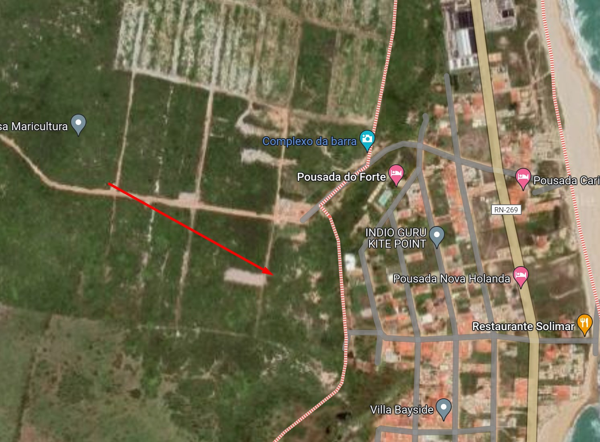

O Fortim da Barra do Cunhaú
Francisco Galvão
Seguindo o que sugerem as fontes [1] BARRETO, Aníbal (Cel.). Fortificações no Brasil (Resumo Histórico). Rio de Janeiro: Biblioteca do Exército Editora, 1958. 368 p. GARRIDO, Carlos Miguez. Fortificações do Brasil. Separata do Vol. III dos Subsídios para a História Marítima do Brasil. Rio de Janeiro: Imprensa Naval, 1940. SOUSA, Augusto Fausto de. Fortificações no Brazil. RIHGB. Rio de Janeiro: Tomo XLVIII, Parte II, 1885. p. 5-140. mais tradicionais, podemos afirmar que o Fortim da Barra [2] O inglês Cuthbert Pudsey, em suas memórias, chama este forte de Maranhão em provável alusão ao dono do engenho Cunhaú e também governador da capitania, Antônio de Albuquerque Maranhão. seria a primeira construção dos europeus no Rio Grande do Norte, erguido por volta de 1550, quando marinheiros de Dunquerque encalharam na foz do rio Curimataú [3] Também chamado de rio Cunhaú. . Essa construção tinha forma quadrangular e dupla, com muralhas que chegavam a três metros de altura, na encosta de uma falésia. [4] Designação comum a terras ou rochas altas e íngremes à beira-mar, resultado da erosão marinha.
Arquitetonicamente era um prédio simples e deve ter sido construído em condições extremas. Esse fortim pode ter servido como uma feitoria fortificada para os franceses. Entretanto, essa possibilidade é remota, pois o extrativismo praticado por estes, com o comércio do pau-brasil, não era uma atividade que fixava pessoas.
Tecnicamente é difícil acreditar que alguns simples marinheiros, que ficaram encalhados e esperavam por ajuda, tenham sido os responsáveis pela construção de uma casa de defesa como essa. Também não haveria grande lógica que comerciantes investissem em uma obra assim na colônia. A mobilidade da atividade não justificaria o esforço na construção de uma fortificação tão elaborada.
Seria mais sensato pensar em uma tentativa de fundar uma colônia e que não deu bons resultados. Possivelmente os nativos se opuseram a essa ocupação, como também as condições climáticas podem ter interferido. Além disso, a posição geográfica poderia facilitar o confronto com outras nações interessadas e onerar o investimento. Ainda não há documentos conhecidos nem estudos para comprovar tais hipóteses.
No final do século VXI, quando os ibéricos [5] Portugueses e espanhóis. retomaram a capitania do Rio Grande, não há relatos da conquista do fortim. Isso nos faz deduzir que este ainda não existia ou que estava abandonado e não teve importância direta. Os portugueses preferiram investir na construção da fortaleza dos Santos Reis e fundar uma cidade mais ao norte, Natal.
Em 1630, Adriano Verdonck recolheu informações entre Cunhaú e Natal, mas parece ter omitido informações sobre o fortim da Barra, pois o seu relato se limitou às minúcias sobre o poder de defesa da Fortaleza dos Santos Reis. Ele tentou vender essas informações, mas foi capturado e torturado pelos holandeses, morrendo em fevereiro de 1631.
Olavo de Medeiros Filho, pesquisador da História Colonial do Rio Grande do Norte, interpretando essas informações, pregou uma contramão historiográfica e preferia indicar que a construção do fortim só teria ocorrido em 1634. Isso é pouco provável, pois, quando os holandeses invadiram a capitania, a tomada do Fortim da Barra serviu como a batalha conclusiva para a conquista do território.
Como os principais acessos ao continente eram as vias fluviais, o fortim serviria de proteção à entrada sul da capitania. Natal (Fortaleza dos santos Reis) foi tomada em dezembro de 1633, mas o sul da capitania (Cunhaú) continuou resistindo até o final de outubro de 1634. No local, os portugueses estavam armados com 10 canhões e 2 arcabuzes grandes, colocados num fosso por fora da muralha.
O primeiro ataque ocorreu no começo de abril de 1634, mas a guarnição portuguesa reagiu abortando a tentativa de tomada. Nessa ocasião alguns moradores foram degolados. A tropa do Capitão Álvaro Fragoso de Albuquerque ainda fez perseguição ao inimigo, mas não os alcançou.
No final de abril, os holandeses voltaram e tentaram outro ataque, mas foram novamente derrotados e tiveram várias perdas. Com reforços que vieram da capitania da Paraíba, para ajudar na resistência, a tropa portuguesa saiu em perseguição aos holandeses, porém por falta de munição tiveram que retroceder.
O provável é que nesse momento do conflito, os holandeses ainda não tinham um grande o apoio dos nativos da região e estariam numericamente inferiores aos ibéricos. Também é importante apontar que as chuvas do outono [6] Nessa região as chuvas se precipitam com mais intensidade no outono, entre março e julho. , atrapalharam o ataque. Pois, a pólvora molhada precipitou um confronto corpo-a-corpo e o uso de armas “brancas” no combate.
Em uma última tentativa, ocorrida de 21 para 22 de outubro, os holandeses organizaram uma tropa que deixou o Forte Keulen [7] Fortaleza dos Santos Reais ou Forte dos Reis Magos. e se dirigiu pelo mar em direção à Barra do Cunhaú. Outra tropa partiu por terra com 228 soldados e 50 nativos. O forte foi atacado de surpresa durante a noite, apenas pela tropa terrestre, já que os marinheiros se atrasaram.
Muito embora tivessem um excelente aparato naval, a falta de conhecimento sobre as correntes marítimas locais e dos horários das marés, atrapalhou a ação dos holandeses. A lua minguante favoreceu a surpresa do ataque, mas não oferecia uma elevação suficiente da maré [8] É o que os pescadores locais chamam de maré morta. para uma entrada segura pela foz rio Curimataú. Foi por esse motivo, também, que, ao tentar se retirar com tudo de valor que conseguiram no saque, a embarcação naufragou na saída da barra.
Os holandeses, depois dessa vitória, passaram a dominar a entrada pelo rio Curimataú e tomaram o engenho Cunhaú, o que significou poder geral sobre a capitania do Rio Grande. Não há relatos do uso dessa praça de guerra pelos invasores até serem expulsos do Nordeste, em 1654.
Ao retomar o domínio sobre o Nordeste, os portugueses assumiram o projeto de ocupar o interior do território, dando início a Guerra do Bárbaro. Ocupados com as lutas contra os nativos, essas pequenas fortificações do litoral foram perdendo importância e, no século XVIII, com a posse do território assegurada, o Fortim da Barra parece ter sido esquecido. No século XX só existiriam alguns vestígios. Parte das pedras das muralhas deve ter sido utilizada para os alicerces das primeiras casas de alvenaria do povoado.
Mesmo depois de todas as agressões sofridas, é possível afirmar sua localização com alguma precisão: num local estratégico, ao pé da falésia, no ponto mais próximo à margem esquerda da embocadura do rio Curimataú. Sobre ele foram erguidas três casas de veraneio. Os relatos orais dos proprietários indicam a existência dos vestígios de uma possível construção antiga nos alicerces.
Registros fotográficos da História do Fortim de Barra de Cunhaú
Onde fica?
O Fortim de Barra de Cunhaú fica localizado a aproximadamente 100km de Natal, situando-se no Município de Canguaretama
< ⬅ Página Principal